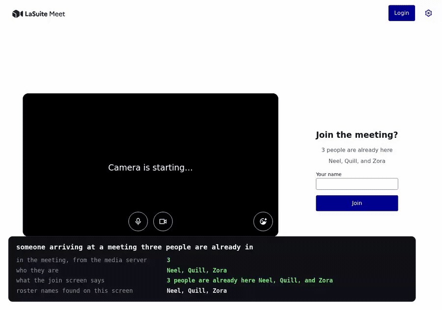
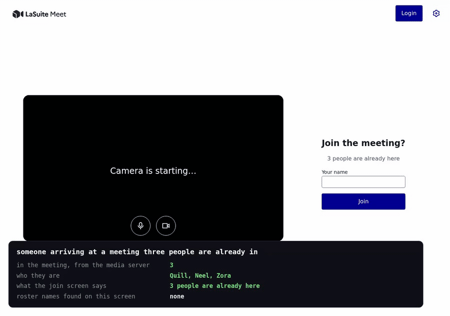

Who is already in the meeting
Pull request #1614 against suitenumerique/meet#1611: the join screen says how many people are in the meeting, and names them.
The join screen asks for a name and previews the camera, and says nothing about the meeting behind it. Whoever arrives cannot tell whether the people they came for are there. Finding out means joining, which everyone inside sees and hears.
What it looks like
Filmed against the branch on a local instance, at its real speed. The panel under the
page is the media server's own roster, read over ListParticipants, beside
what the screen says. Three people are inside, a fourth arrives, and the screen follows
with nothing reloaded.

How it works
GET /rooms/<id>/participants/ reads the meeting from the media server.
It answers only the people the room would let in without approval, which is the rule the
room retrieve already applied before minting a token. Anyone who would have to wait for
approval sees the screen exactly as before.
A field on the existing room retrieve would have been cheaper to write and wrong: that endpoint mints a token on every call, and the join screen would mint one every five seconds.
What it costs
The join screen polls, so everyone waiting on one meeting asks the same question at once. The answer is held six seconds, one second longer than the poll, so a lone waiter costs a call every other poll rather than every one.
| Forty browsers waiting on one meeting | Calls a minute to the media server |
|---|---|
| Asking each time | 480 |
| Holding the answer six seconds | 10 |
The failure is held the same way, so a media server that cannot be reached costs one call per meeting rather than one per browser, which is when it can least afford them. The join screen keeps asking through a failure and gives up only on a refusal, so a blip no longer takes the line off the screen until someone reloads.
A media server that takes the connection and then says nothing is given three seconds. The deployment runs three synchronous workers, so a call that waits longer than that is not one slow join screen, it is the whole backend, reached by opening a link and clicking nothing.
A name that reads like a room id
A meeting nobody created is addressed by the name in the address bar, and that path has no owner and no access level to check. A name reading like a room's id would therefore have reached a room that does exist, whose access level nobody read. Such a name is refused now, on this endpoint and on the room retrieve beside it, which is the same rule the database already applies to room names when they are created.
The calls left for a human
| The call | What the branch chose |
|---|---|
| Who is told | Whoever the API would already hand a pass to. Nobody waiting for approval. |
| A feature flag | None, so a self-hosted deployment that does not want the disclosure has no switch. |
| How it stays fresh | A five-second poll. The media server's own participant webhooks would make it free, and they arrive already with no handler. |
| How many names | Five, cut by the endpoint rather than the screen, then a count of everyone else. |
Without the names
Dropping the roster and keeping the count is two lines of the endpoint and one component. It answers whether the meeting has started and tells whoever holds the link nothing about who took it. The same clip against that shape, where the panel names three people and the screen names none of them:
